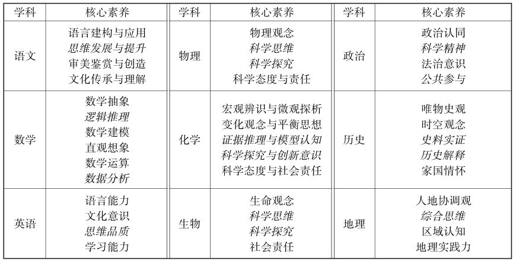

作为承担通识教育的核心目标之一的逻辑通识教育，是培养思维能力的一个核心环节。在高中阶段，进行逻辑通识教育，目的是进一步开发心智，激发学生的探索欲望，培养学生的独立思考能力和批判精神，从而更好地适应今后社会发展和个人发展的多方面需要。
教育部颁布的最新高考考试大纲明确指出要科学构建高考评价体系，高考的考查内容包括必备知识、关键能力、学科素养、核心价值这四个层面，这是素质教育目标在高考内容中的集中提炼。根据考纲要求，高考各科的核心素养提炼如下（其中斜体字部分，均与逻辑思维相关）：

尽管高考中不同科目的关键能力会有所不同，但都包含了逻辑思维作为核心能力之一。近年来，注重对考生逻辑思维能力的考查，成了新高考的一大亮点。下面以语文、数学科目为例说明。
语文：高考语文对逻辑思维能力和信息处理能力的要求格外重要。现代文阅读必然会涉及逻辑能力、分析能力的考查，其中论述类文本将多选用论文和时评，将重点考查逻辑论证和批判性思维能力;在写作中，重点考查批判性思维能力、思辨能力和逻辑论证能力。
数学：高考数学已把考查逻辑推理能力作为重要任务。以数学知识为载体，考查学生缜密思维、严格推理的能力，特别是注重考查考生的独立思考、逻辑推理、数学应用、数学阅读和表达等关键能力。
在高考中，逻辑思维能力的考核主要体现在思维的深刻性和批判性两个方面，深刻性是指思维活动的抽象程度和逻辑水平，以及思维活动的广度、深度和难度;批判性是指思维活动中独立分析和批判的程度。因此，要在高考中获得成功，除知识学习之外，高中生在平时的学习中一定要注重对逻辑推理、逻辑论证、批判性思维和科学逻辑、科学推理、科学思维等能力和方法训练。
鉴于目前各地高中与逻辑思维能力训练直接相关的教学活动还比较少，适合高中生阅读且能与各学科结合紧密的逻辑普及读物并不多见，尤其是适合高中逻辑通识教育的读本几乎没有，为此，本人在前期编著出版高校逻辑通识课程教材（由清华大学出版社出版）和科学逻辑丛书（由化学工业出版社出版）的基础上，专门针对高中学生，编写了这套读本，具体包括《简明逻辑学——逻辑论证与批判性思维》 《科学逻辑——逻辑推理与科学思维方法》两册。希望本套图书的出版，有助于高三学生备战高考，能成为高中学生逻辑思维能力提升和高中教师师资培养的教学训练用书。
由于本套图书首次推出，疏漏和不足之处在所难免，因此，热诚欢迎高中师生及相关读者对本书批评指正，提出宝贵意见。若有信息反馈请直接发至本人邮箱： zjwgct@ sina. com。
作 者
2020年3月